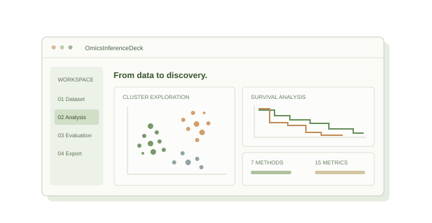
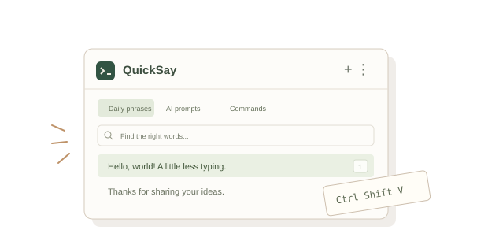

WORKFLOW CONCEPT / 工作流示意OmicsInferenceDeck
把分散的多组学分析步骤，整理成一个可运行、可比较、可导出的研究工作台。
项目细节
按数据接入、算法运行、指标评估与绘图拆分服务；用 Python 编排 R 计算，以 Parquet 传递中间数据。前端支持上传、配置、运行反馈和结果导出。
包含 7 种聚类方法、15 种评估指标与 15 种图表，支持 PNG、SVG、PDF 导出。获批 2026 国家级大创重点项目。
阅读项目源码 ↗你好，我是砍刀
From curiosity to creation.
我是翁路凯，一名喜欢动手做东西的开发者。
用 Python 探索 AI 与数据，把遇到的问题，
一点点变成能用的工具。
while curious:
learn() # 保持好奇
build() # 认真创造▌从「这个能不能做？」
到「这个真的能用。」
你好！我叫翁路凯，网名是强壮的砍刀，目前在湖州师范大学读本科，预计 2028 年毕业。我对 AI 应用开发、数据挖掘，以及让日常更轻松的小工具感兴趣。
我喜欢完整地解决一个问题：从整理数据、搭建后端，到做出可以交互的界面。写代码时也会使用 AI 工具辅助开发，再认真检查逻辑、补上边界和测试。对我来说，把东西做出来，是理解它的好方式。

WORKFLOW CONCEPT / 工作流示意把分散的多组学分析步骤，整理成一个可运行、可比较、可导出的研究工作台。
按数据接入、算法运行、指标评估与绘图拆分服务；用 Python 编排 R 计算，以 Parquet 传递中间数据。前端支持上传、配置、运行反馈和结果导出。
包含 7 种聚类方法、15 种评估指标与 15 种图表，支持 PNG、SVG、PDF 导出。获批 2026 国家级大创重点项目。
阅读项目源码 ↗
INTERFACE CONCEPT / 功能示意常用短语、命令和 AI 提示词，随叫随到。让重复输入这件小事，少占一点时间。
支持短语分组、搜索、拖动排序、自定义快捷键和连续输入，也可通过标签执行按键、暂停、粘贴图片或文件。
面向 Windows 10 / 11，免费、开源，持续维护。用一个轻量桌面工具，解决反复打开文本文件复制粘贴的麻烦。
查看发行版本 ↗从原始数据走到模型与求解。记录一次数学建模实践，也留下可以继续复现和讨论的代码。
第十六届 MathorCup 数学应用挑战赛 C 题项目，获全国一等奖。我负责数据预处理、建模、编程求解、题解撰写与说明文档编写，论文由团队其他成员完成。
查看代码与题解 ↗围绕问题选工具，
在项目里长本事。
从接口设计、数据校验，到模块化服务。
检测、筛选、跟踪，让模型走进实际流程。
清洗数据、处理特征，寻找藏在数据里的线索。
把功能变成交互，用 AI 辅助、用审查和测试把关。
重点项目立项 · 基于 OmicsInferenceDeck
数据预处理、建模与编程求解 · 团队项目
以 OmicsInferenceDeck 项目参赛